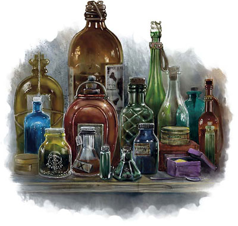

Poisons
Compte tenu de leur nature insidieuse et mortelle, les poisons sont illégaux dans la plupart des sociétés, mais ils n'en sont pas moins l'un des outils préférés des assassins, des drows et d'autres créatures maléfiques. Les poisons sont de quatre types :
Blessure. Un poison par blessure peut être appliqué à des armes, à des munitions, à des pièges et à tout autre objet qui inflige des dégâts perforants ou tranchants. Il reste efficace jusqu'à ce qu'il pénètre ou soit lavé. Une créature qui reçoit des dégâts perforants ou tranchants d'un objet recouvert par ce type de poison est exposée à ses effets.
Contact. Un poison par contact peut être étalé sur un objet et reste efficace jusqu'à ce qu'il soit touché ou lavé. Une créature dont la peau touche un poison de contact subit les effets de ce type de poison.
Ingestion. Une créature doit avaler une dose entière de poison par ingestion pour souffrir de ses effets. La dose peut être placée dans des aliments ou dans un liquide. Un MD peut décider qu'une dose partielle produit un effet réduit, comme donner l'avantage au jet de sauvegarde ou n'infliger que la moitié des dégâts en cas d'échec à la sauvegarde.
Inhalation. Ces poisons sont des poudres ou des gaz qui ne font effet que lorsqu'ils sont inhalés. Souffler la poudre ou libérer le gaz affecte les créatures dans un cube de 1,50 mètre de côté. Le nuage qui en résulte se dissipe immédiatement après. Retenir sa respiration est inefficace contre les poisons par inhalation, car ils affectent les muqueuses nasales, les conduits lacrymaux, et d'autres parties du corps.

| Poison | Type | Prix par dose |
|---|---|---|
| Essence éthérée | Inhalation | 300 po |
| Fumées d'othur | Inhalation | 500 po |
| Huile de taggit | Contact | 400 po |
| Larmes de minuit | Ingestion | 1500 po |
| Malice | Inhalation | 250 po |
| Mucus de charognard rampant | Contact | 200 po |
| Poison de ver pourpre | Blessure | 2000 po |
| Poison de wiverne | Blessure | 1200 po |
| Poison drow | Blessure | 200 po |
| Sang d'assassin | Ingestion | 150 po |
| Sérum de vérité | Ingestion | 150 po |
| Teinture pale | Ingestion | 250 po |
| Torpeur | Ingestion | 600 po |
| Venin de serpent | Blessure | 200 po |